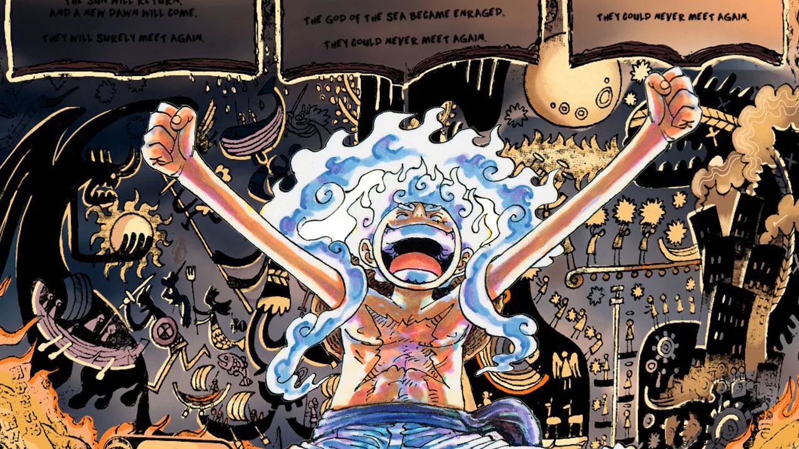

Origem do nome "One Piece"
Eiichiro Oda, criador da obra, escolheu o nome One Piece para se referir ao tesouro supremo deixado pelo Rei dos Piratas, Gol D. Roger. Mas, além disso, ele também quis transmitir a ideia de "um mundo unido como uma só peça", algo que se conecta com o espírito de aventura e liberdade dos personagens.